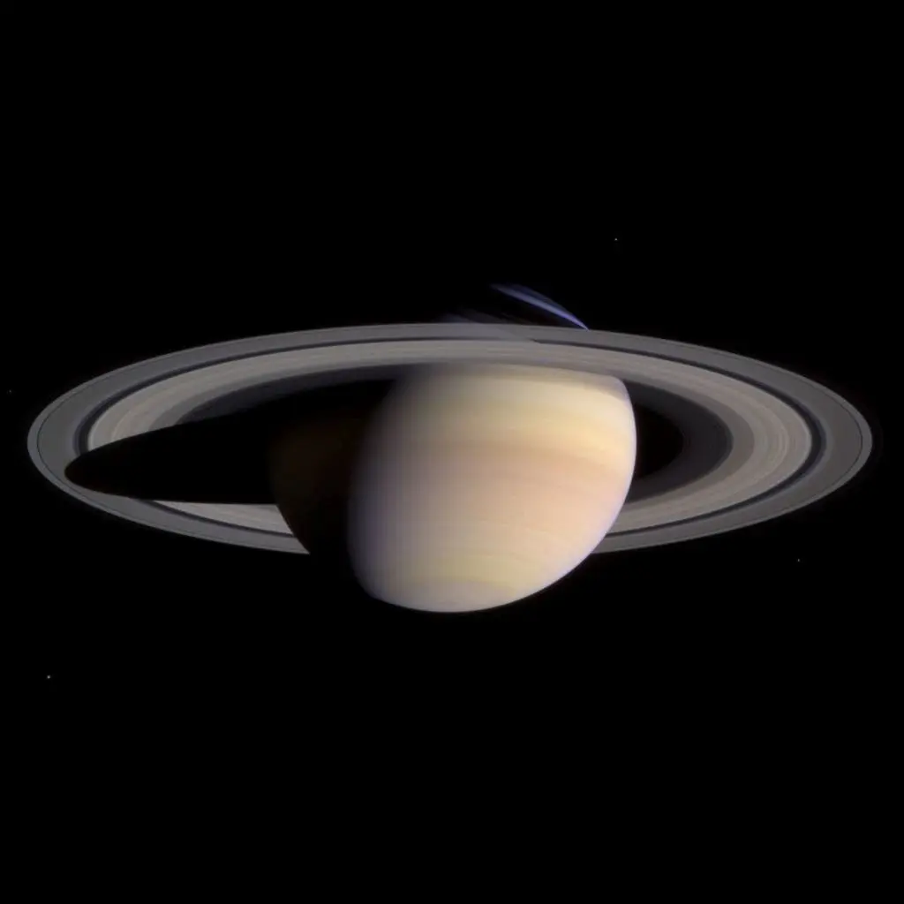
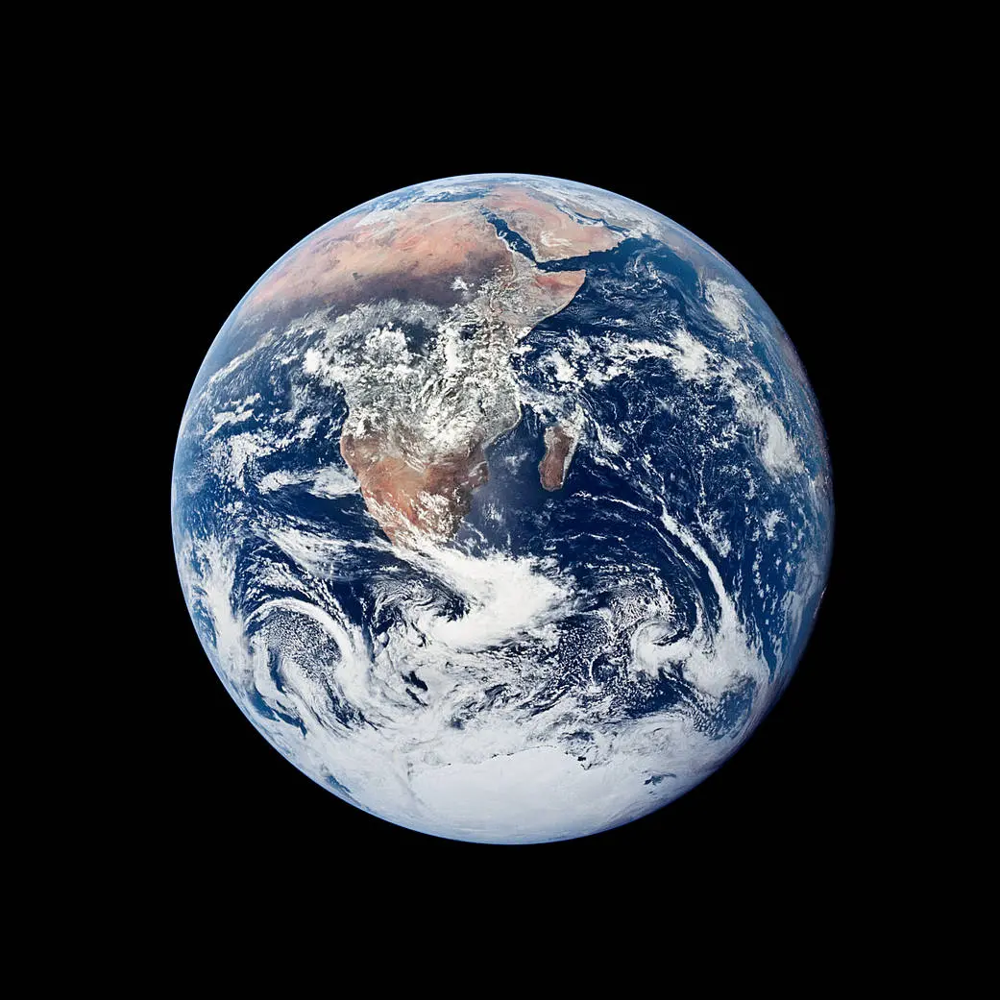
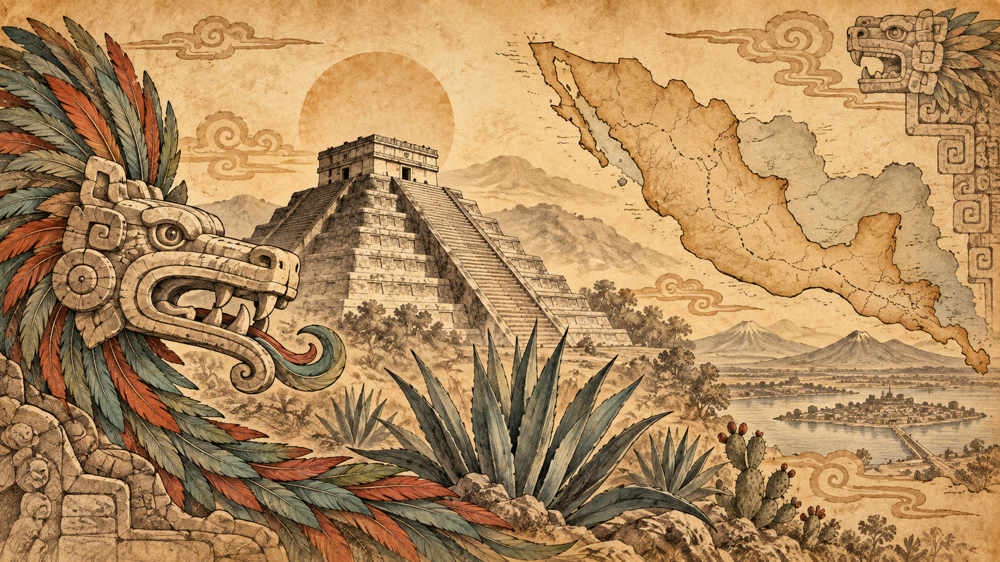
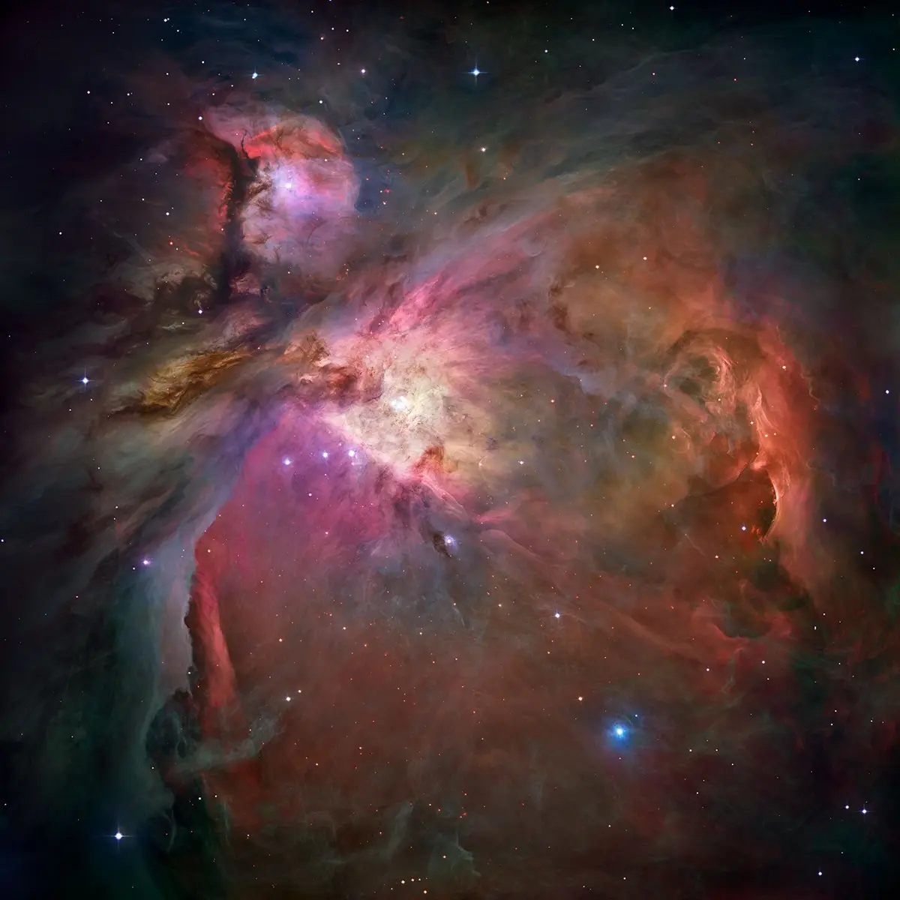

La Tierra
Fotografía de Apollo 17, 7 de diciembre de 1972. Crédito: NASA.
Fuente originalUN ATLAS PARA MENTES CURIOSAS
Explora el espacio, comprende la Tierra y descubre nuestra historia.
Explicaciones claras, visuales y paso a paso.

11 temas · Del sistema solar al universo
Explorar el espacio
8 temas · Océanos, montañas y clima
Explorar la Tierra
6 rutas · 57 episodios ilustrados
Explorar la historiaAPRENDE HACIENDO
Construye un sistema solar a escala y compara los ocho planetas.
Entrar al laboratorio
OBSERVAR TAMBIÉN ES PREGUNTAR
Descubre qué distingue a una estrella, una nebulosa y una galaxia.
Leer la exploraciónMosaico de Orión: NASA, ESA y equipo Hubble Orion Treasury. Colores asignados. Ver créditos
Cargando exploraciones…
Cargando exploraciones…
APRENDER HACIENDO · JUGAR · EXPLICAR
Aquí no solo lees: observas, decides, ordenas evidencias y construyes una explicación. Elige una misión y avanza a tu ritmo.
VER · TOCAR · COMPRENDER
Selecciona una parte del dibujo. La imagen es una guía para pensar, no un adorno: cada color y cada etiqueta tienen una función.
ANIMAR · PAUSAR · EXPLICAR
Avanza paso a paso o presiona reproducir. Cada escena está diseñada para explicarse en clase y para que el alumno pueda detenerse a preguntar.
IMÁGENES Y FUENTES
Las imágenes científicas tienen una procedencia y una forma de construcción. Los créditos no implican respaldo institucional a Atlas.
Fotografía de Apollo 17, 7 de diciembre de 1972. Crédito: NASA.
Fuente originalComposición en color natural de Cassini, 27 de marzo de 2004. NASA/JPL/Space Science Institute.
Fuente originalMosaico de Hubble y observaciones terrestres con colores asignados. NASA, ESA, Hubble Space Telescope Orion Treasury Project Team, Massimo Robberto (STScI, ESA).
Fuente originalLas ilustraciones narrativas de Historia son recreaciones con IA, identificadas en sus recorridos. Vida cotidiana y fuentes incorpora fotografías reales de objetos del Met y una fotografía histórica de la Biblioteca del Congreso; cada caso indica procedencia, fecha y derechos. Cada tema incluye su fuente de consulta.
OBSERVAR · ORDENAR · ARGUMENTAR
Cuatro recorridos para conectar ciudades, gobierno y derechos. Explora los hitos, resuelve un reto y construye tu explicación con evidencia.
MIRAR · CONTRASTAR · INVESTIGAR
Alimentos, intercambios y escuela: observa objetos y fotografías reales, consulta su procedencia y construye una explicación.
RUTAS DE EXPLORACIÓN
Cargando rutas históricas…
No encontramos una ruta con esa búsqueda. Prueba con “México”, “Roma” o “Revolución”.
ACONTECIMIENTOS Y PROCESOS
Recorridos por tema. Las fechas aproximadas llevan “c.”; las etapas no comenzaron al mismo tiempo en todas las regiones.
No es una lista de fechas aisladas: cada acontecimiento forma parte de un proceso, con causas, cambios regionales y consecuencias. Abre una tarjeta para continuar en la ruta y comparar evidencias.
HISTORIA Y TERRITORIO
Selecciona un estado o busca un municipio. Los puntos terracota abren las rutas históricas.
Límites contemporáneos de referencia, no fronteras históricas. Cartografía simplificada de 32 entidades y 2,436 municipios; catálogo antiguo, no vigente. Fuente cartográfica. Usa los selectores para navegar con teclado.
Selecciona un municipio para encontrar rutas relacionadas o preparar una investigación local.
APRENDER CON EVIDENCIAS
Distingue un hecho documentado, una interpretación y una tradición o mito.
PARA LLEVAR AL AULA
Cargando guías docentes…
REFERENCIAS VISUALES PARA SEGUIR EXPLORANDO
Son referencias externas para proyectar o investigar. Atlas no los presenta como fuentes propias: cada enlace conserva su autoría.
MIRA · LEE · PREGUNTA
Seis procesos, 57 episodios y preguntas para investigar. Elige una historia y recórrela a tu ritmo.
HISTORIA LOCAL · PATRIMONIO VIVO
Lugares de las 32 entidades: monumentos, museos, sitios arqueológicos y edificios históricos. Una guía para explorar en clase y preparar una visita.